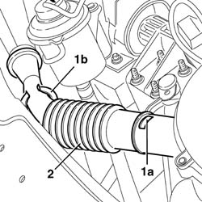
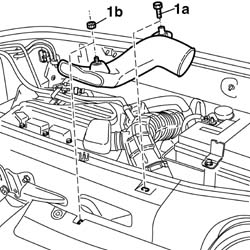
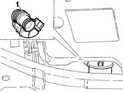
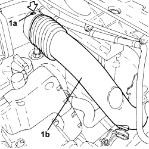

1048A23 cold air intake - r r
- Path
- Procedures > 10 ENGINE > 1048 ENGINE AIR SUPPLY CIRCUIT > 1048A VACUUM AIR CIRCUIT > 1048A23 cold air intake - r r
- Kind
- repair procedure (removal / refitting; the operation number is the code)
- Applies to
- engines: 1.2 8v, 1.4 8v, 1.6 16v, 1.3 JTD 16V, 1.9 JTD 8V; all production periods
- Interactive page
- https://sloeber94.github.io/elrnDB-fDbl/en/#/2584238
Applies to: engines: 1.2 8v; all production periods
1. Press the two retaining tabs (1a) and release the air intake from the plastic support (1b).
2. Remove the cold air intake, releasing it from the filter casing.

Applies to: engines: 1.6 16v; all production periods
Position the cold air intake in the filter casing, checking that the retaining tabs are correctly fitted.
Secure the cold air intake to the side support.
Applies to: engines: 1.6 16v; all production periods
 Removing
Removing
 Refitting
RefittingDisconnect the battery negative terminal.
Op. 1048A21 FILTER AIR INTAKE HOSE - R.R..
1. Undo bolt (1a) and nut (1b), then remove the cold air intake.

Applies to: engines: 1.6 16v; all production periods
Refitting
RemovingFit the cold air intake and secure by means of the nut and bolt.
Op. 1048A21 FILTER AIR INTAKE HOSE - R.R..
Connect the battery negative terminal.
Applies to: engines: 1.3 JTD 16V; all production periods
Removing
Refitting1. Disconnect the air filter cold air intake, air filter side and remove it by releasing it from the front fastening.

Applies to: engines: 1.3 JTD 16V; all production periods
Refitting
RemovingPlace the air filter cold air intake in its housing and connect it.
Applies to: engines: 1.9 JTD 8V; all production periods
Removing
RefittingProceed with the removal
Proceed with the removal
Op. 5530B52 BATTERY SUPPORT/DRIP TRAY - R.R..
Proceed with the removal
Applies to: engines: 1.9 JTD 8V; all production periods
Refitting
RemovingProceed with the refitting
Op. 1048A21 FILTER AIR INTAKE HOSE - R.R..
Proceed with the refitting
Op. 5530B52 BATTERY SUPPORT/DRIP TRAY - R.R..
Proceed with the refitting
Applies to: engines: 1.4 8v; all production periods
Removing
Refitting1. Press clips (1a) and remove the cold air intake pipe (1b).
